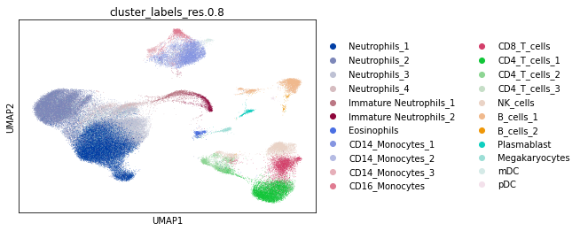
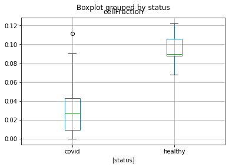

24. 批量反卷积#
关键要点
使用无偏的参考数据，且不缺少任何细胞类型。
使用文库大小归一化对参考数据做归一化。
在反卷积之前做特征选择，能提高结果的准确性，尤其是对线性反卷积方法而言。
反卷积是一项有挑战性的任务（见“局限与陷阱”）。因此，我们建议用户尝试不止一种反卷积方法，并在从生物学上评估结果后再选定一种。
环境设置
安装 conda:
在创建环境之前，请确保 conda 已安装在您的系统中。
保存 yml 内容:
将 yml 选项卡中的内容复制到名为
environment.yml的文件中。
创建环境:
打开终端或命令提示符。
运行以下命令：
conda env create -f environment.yml
激活环境:
创建好环境后，使用以下命令激活它：
conda activate <environment_name>
替换
<environment_name>，名称就是在environment.yml文件中指定的那个。在 yml 文件里，它看起来像这样：name: <environment_name>
验证安装:
通过运行以下命令，检查环境是否创建成功：
conda env list
TL;DR：我们简要概述细胞类型反卷积的基本概念，包括输入结构、数据预处理和输出数据的分析。
24.1. 背景情况#
研究大块组织内细胞类型组成的差异之所以重要，有几个原因。第一，细胞类型之间的相互作用在疾病的进展和恢复中起着重要作用。第二，分子层面的模式（如基因表达和蛋白质丰度）往往与组织内细胞类型的组成直接相关。理解这些组成，对于研究疾病等生物学状态的底层分子机制至关重要。第三，揭示疾病特异的细胞类型模式，有助于更好地确定治疗靶点，具有重要的临床价值。
细胞类型反卷积是一个计算框架，旨在推断批量异质组织内各细胞群体的组成 [Du et al., 2019, Kuhn et al., 2012, Schwartz, 2010, Zaitsev et al., 2019]。由于通过实验来测量这些组成既耗时又昂贵，反卷积方法使得能够基于分子数据对细胞群体做大规模分析。反卷积方法通常遵循线性回归，定义如下：
\(y = bX\)
其中， \(y\) 指的是用常见分子流程（如微阵列或 RNA-seq）测得的、异质性基因表达谱的混合物， \(X\) 是一个 signature 矩阵（特征矩阵），包含各细胞类型特异的、同质的表达谱，而 \(b\) 是由反卷积方法推断出的、混合物数据中各细胞比例构成的向量。[Baron et al., 2016]。为了选出适合目标生物学条件的最佳反卷积方法，应考虑若干技术和生物学因素的影响，包括：反卷积方法本身、缺失或稀有细胞类型的参考数据、数据归一化，以及特征（标记物）的选择。
签名矩阵 \(X\)用于推断细胞组成，它反映了我们对组织内细胞异质性的最佳认识，并在很大程度上影响反卷积过程的成败 [Aliee and Theis, 2021]。最初，signature 矩阵是通过对异质组织中的细胞进行分选（使用 FACS 或 CyTOF）并刻画其表达谱来生成的；由于细胞类型面板需要预先选定、以及缺乏合适的抗体，这种方式存在内部偏倚 [Aran et al., 2017, Monaco et al., 2019]。如今，这些矩阵主要是利用单细胞技术、作为无偏的表达谱来生成的，从而可以跨不同物种、组织和生物学条件生成 signature 矩阵。[Aliee and Theis, 2021, Newman et al., 2019].
24.2. 方法#
批量反卷积方法可以分为：基于线性回归的方法、基于富集的方法、基于非线性深度学习的方法，以及其他方法。
最常见的一类细胞类型反卷积方法是基于线性回归的。这些方法试图直接求解 \(y = bX\) 方程，使用不同的正则化、并依赖相对较多的特征。这类工具的例子有 CIBERSORTx [Newman et al., 2019], MuSiC [], dtangle [] 和 DWLS [].
另一方面，基于富集的工具会根据代表某种细胞类型的基因集，分别为每种细胞类型计算一个富集分数。然后，所有细胞类型的富集分数会被合并，并通过某种方法特定的变换函数转换为组成比例。由于这些方法每次只考虑一种细胞类型，它们在简单情形下往往能提供有意义的洞见，但当参考数据包含许多细胞类型时则不太准确。xCell [Aran et al., 2017] 是一个以富集为基础的工具的例子。
第三种选择是非线性深度学习方法，它们的出现带来了提高反卷积准确性的希望，同时仍力图保持较高的生物学可解释性。现在还很难说这些方法是否会优于其他类型的方法。Scaden [Menden et al., 2020] 是一种以深度学习为基础的方法的例子。
批量反卷积方法已被广泛地做过基准测试，结果总体上相当一致 [Nadel et al., 2021, Shen-Orr and Gaujoux, 2013]。使用单细胞 RNA-seq 数据的方法表现良好，而半监督方法的错误率较高。无论如何，如果参考数据中没有包含批量混合物中存在的细胞类型，都会导致更差的结果 []。Cobos 等人建议：(1) 输入数据应为线性尺度；(2) 避免行缩放、列 min-max、列 z-score 或分位数归一化；(3) CIBERSORTx 或 FARDEEP 等基于回归的批量反卷积方法 [] 表现良好；如果有 scRNA-seq 数据，则 DWLS、MuSiC 或 SCDC [] 也应一并应用以便比较结果；(4) 应采用严格的标记物选择策略，重点关注表达值最高的第一和第二种细胞类型之间的差异；(5) 应使用一个全面的参考矩阵，包含混合物中所有相关的细胞类型 []。归一化策略的影响尚不明确：Li 等人 [] 认为它对结果有很强的影响，但这一点未被 Cobos 等人证实。[].
由于包括表现良好的 CIBERSORTx 在内的许多批量反卷积工具都只以网页工具的形式提供，我们选择用 MuSiC 来演示一个用例。
需要注意的是，MuSiC 需要多个包含相同细胞类型的单细胞样本。实际上，我们的参考谱可能只包含单个样本，或者某些细胞类型在各样本中缺失。在这些情况下，MuSiC 会失败，应当改选另一种反卷积方法。
24.3. 对批量 COVID-19 全血样本做反卷积#
在下面的用例中，我们对从 39 名 COVID-19 患者和 10 名健康对照采集的 49 个批量全血 RNA-seq 样本做反卷积 []，使用的是 MuSiC。作为单细胞参考数据集，我们将使用 COVID-19 患者的全血单细胞 RNA-seq 数据。[Schulte-Schrepping et al., 2020].
24.3.1. 环境设置#
import numpy as np
import pandas as pd
import scanpy as sc
import scipy as sci
24.3.2. 加载数据#
我们首先读入单细胞数据和批量数据。我们不对数据做缩放，因为已有研究表明：以 scRNA-seq 数据为参考的反卷积方法，在应用于线性尺度的数据时表现最好，并在做文库大小归一化后精度更高 [].
data_file = "/storage/groups/ml01/workspace/amit.frishberg/OriginalData/"
adata = sc.read(data_file + "seurat_COVID19_freshWB_PBMC_cohort2_incl_raw.h5ad")
adata.X = adata.layers["counts"]
adata = adata[adata.obs["cells"] == "Whole_blood"].copy()
adata
AnnData object with n_obs × n_vars = 89883 × 33417
obs: 'orig.ident', 'nCount_RNA', 'nFeature_RNA', 'nCount_HTO', 'nFeature_HTO', 'percent.mito', 'percent.hb', 'HTO_maxID', 'HTO_secondID', 'HTO_margin', 'HTO_classification', 'HTO_classification.global', 'hash.ID', 'demultID', 'donor', 'onset_of_symptoms', 'days_after_onset', 'sampleID', 'date_of_sampling', 'experiment', 'cartridge', 'platform', 'purification', 'cells', 'age', 'sex', 'group_per_sample', 'who_per_sample', 'disease_stage', 'diagnosis', 'oxygen', 'outcome', 'comorbidities', 'COVID.19.related_medication_and_anti.microbials', 'primary_complaint', 'RNA_snn_res.0.8', 'cluster_labels_res.0.8', 'new.order', 'hpca.labels', 'blueprint.labels', 'monaco.labels', 'immune.labels', 'dmap.labels', 'hemato.labels'
var: 'vst.mean', 'vst.variance', 'vst.variance.expected', 'vst.variance.standardized', 'vst.variable'
obsm: 'X_pca', 'X_umap'
layers: 'counts'
adata.obs["cluster_labels_res.0.8"].value_counts()
Neutrophils_1 22714
Neutrophils_2 18675
Neutrophils_3 9986
CD4_T_cells_1 6278
CD14_Monocytes_1 5362
Neutrophils_4 4710
CD8_T_cells 3255
Megakaryocytes 3180
NK_cells 2916
B_cells_1 2561
CD4_T_cells_2 1917
Mixed_cells 1727
Immature Neutrophils_1 1317
CD16_Monocytes 983
Immature Neutrophils_2 981
CD14_Monocytes_3 632
Eosinophils 579
CD14_Monocytes_2 556
CD4_T_cells_3 409
Plasmablast 390
Prol. cells 247
mDC 235
B_cells_2 138
pDC 86
CD34+ GATA2+ cells 49
Name: cluster_labels_res.0.8, dtype: int64
bulk = pd.read_csv(data_file + "BulkSmall.txt", sep="\t", index_col=0)
metadata = pd.read_csv(data_file + "annoSmall.txt", sep="\t", index_col=0)
metadata.index = metadata.index.astype("str")
metadata = metadata.loc[bulk.transpose().index]
24.3.3. 数据预处理#
读完数据后，我们需要从单细胞参考数据中移除标记为 undefined 的细胞。在这里，我们去除那些不限于一种细胞类型的混合细胞和增殖细胞。
Note 在单细胞数据上，已经通过去除低质量细胞和基因完成了质量控制。所以这一步我们跳过。
adata = adata[
~adata.obs["cluster_labels_res.0.8"].isin(["None", "Mixed_cells", "Prol. cells"])
].copy()
ct_counts = adata.obs["cluster_labels_res.0.8"].value_counts()
adata.obs["cluster_labels_res.0.8"].value_counts()
Neutrophils_1 22714
Neutrophils_2 18675
Neutrophils_3 9986
CD4_T_cells_1 6278
CD14_Monocytes_1 5362
Neutrophils_4 4710
CD8_T_cells 3255
Megakaryocytes 3180
NK_cells 2916
B_cells_1 2561
CD4_T_cells_2 1917
Immature Neutrophils_1 1317
CD16_Monocytes 983
Immature Neutrophils_2 981
CD14_Monocytes_3 632
Eosinophils 579
CD14_Monocytes_2 556
CD4_T_cells_3 409
Plasmablast 390
mDC 235
B_cells_2 138
pDC 86
CD34+ GATA2+ cells 49
Name: cluster_labels_res.0.8, dtype: int64
已有研究表明，反卷积方法通常无法预测稀有细胞的比例 []。如果想去除稀有细胞类型，可以只保留细胞数量超过 cellTypeNumCutOff 的细胞类型。这个阈值由用户定义，应根据数据来选择。
# removing very rare cells
rare_ct_cut_off = 50 # This is a user-specific parameter based on the data
ct_to_keep = ct_counts[ct_counts > rare_ct_cut_off].index
adata = adata[adata.obs["cluster_labels_res.0.8"].isin(ct_to_keep)].copy()
adata.obs["cluster_labels_res.0.8"].value_counts()
Neutrophils_1 22714
Neutrophils_2 18675
Neutrophils_3 9986
CD4_T_cells_1 6278
CD14_Monocytes_1 5362
Neutrophils_4 4710
CD8_T_cells 3255
Megakaryocytes 3180
NK_cells 2916
B_cells_1 2561
CD4_T_cells_2 1917
Immature Neutrophils_1 1317
CD16_Monocytes 983
Immature Neutrophils_2 981
CD14_Monocytes_3 632
Eosinophils 579
CD14_Monocytes_2 556
CD4_T_cells_3 409
Plasmablast 390
mDC 235
B_cells_2 138
pDC 86
Name: cluster_labels_res.0.8, dtype: int64
在选择高变基因之前，我们需要过滤出批量数据与单细胞数据共有的基因。
bulk_sc_genes = np.intersect1d(bulk.index, adata.var_names)
bulk = bulk.loc[bulk_sc_genes, :].copy()
adata = adata[:, bulk_sc_genes].copy()
24.3.4. 单细胞数据的可视化#
为了可视化单细胞数据，我们首先对计数做归一化，选择高变基因，并对数据做对数变换。
sc.pp.normalize_per_cell(adata, counts_per_cell_after=1e4, copy=False)
sc.pp.highly_variable_genes(adata, flavor="cell_ranger", n_top_genes=5000)
adata_log = sc.pp.log1p(
adata, copy=True
) # logged counts are only used for visualisation (can also work with layers)
然后利用主成分分析（PCA）降低维度，并使用 UMAP 可视化数据：
sc.tl.pca(adata_log)
adata_log.obsm["X_pca"] *= -1 # multiply by -1 to match Seurat
sc.pp.neighbors(adata_log, n_neighbors=30)
sc.tl.umap(adata_log)
sc.pl.umap(adata_log, color="cluster_labels_res.0.8")

24.3.5. 使用 MuSiC 进行反卷积#
24.3.5.1. 加载 R#
# R interface
import anndata2ri
from rpy2.robjects import pandas2ri
pandas2ri.activate()
anndata2ri.activate()
%load_ext rpy2.ipython
C:\Users\Shennor\.conda\envs\eharpy\lib\site-packages\rpy2\robjects\packages.py:365: UserWarning: The symbol 'quartz' is not in this R namespace/package.
warnings.warn(
要使用这些 R 脚本，我们需要把数据从 Python 转换到 R。在某些情况下，这需要对数据做下采样，以避免内存限制。
import itertools
import random
downSamplingSize = 80
downSamplingIndexes = [
random.sample(
np.where(currCell == adata.obs["cluster_labels_res.0.8"])[0].tolist(),
np.min(
[downSamplingSize, np.sum(currCell == adata.obs["cluster_labels_res.0.8"])]
),
)
for currCell in np.unique(adata.obs["cluster_labels_res.0.8"])
]
downSamplingIndexes = list(itertools.chain(*downSamplingIndexes))
adata_r = adata[downSamplingIndexes].copy()
adata_r
AnnData object with n_obs × n_vars = 1809 × 26807
obs: 'orig.ident', 'nCount_RNA', 'nFeature_RNA', 'nCount_HTO', 'nFeature_HTO', 'percent.mito', 'percent.hb', 'HTO_maxID', 'HTO_secondID', 'HTO_margin', 'HTO_classification', 'HTO_classification.global', 'hash.ID', 'demultID', 'donor', 'onset_of_symptoms', 'days_after_onset', 'sampleID', 'date_of_sampling', 'experiment', 'cartridge', 'platform', 'purification', 'cells', 'age', 'sex', 'group_per_sample', 'who_per_sample', 'disease_stage', 'diagnosis', 'oxygen', 'outcome', 'comorbidities', 'COVID.19.related_medication_and_anti.microbials', 'primary_complaint', 'RNA_snn_res.0.8', 'cluster_labels_res.0.8', 'new.order', 'hpca.labels', 'blueprint.labels', 'monaco.labels', 'immune.labels', 'dmap.labels', 'hemato.labels'
var: 'vst.mean', 'vst.variance', 'vst.variance.expected', 'vst.variance.standardized', 'vst.variable'
obsm: 'X_pca', 'X_umap'
layers: 'counts'
如果不需要下采样（数据相对较小），可以直接把整个 AnnData 转换为一个 R 对象
adata_r = adata.copy()
adata_r
AnnData object with n_obs × n_vars = 87860 × 26807
obs: 'orig.ident', 'nCount_RNA', 'nFeature_RNA', 'nCount_HTO', 'nFeature_HTO', 'percent.mito', 'percent.hb', 'HTO_maxID', 'HTO_secondID', 'HTO_margin', 'HTO_classification', 'HTO_classification.global', 'hash.ID', 'demultID', 'donor', 'onset_of_symptoms', 'days_after_onset', 'sampleID', 'date_of_sampling', 'experiment', 'cartridge', 'platform', 'purification', 'cells', 'age', 'sex', 'group_per_sample', 'who_per_sample', 'disease_stage', 'diagnosis', 'oxygen', 'outcome', 'comorbidities', 'COVID.19.related_medication_and_anti.microbials', 'primary_complaint', 'RNA_snn_res.0.8', 'cluster_labels_res.0.8', 'new.order', 'hpca.labels', 'blueprint.labels', 'monaco.labels', 'immune.labels', 'dmap.labels', 'hemato.labels', 'n_counts'
var: 'vst.mean', 'vst.variance', 'vst.variance.expected', 'vst.variance.standardized', 'vst.variable', 'highly_variable', 'means', 'dispersions', 'dispersions_norm'
uns: 'hvg'
obsm: 'X_pca', 'X_umap'
layers: 'counts'
24.3.5.2. 运行 MuSiC#
%%R
library(MuSiC)
library(Biobase)
我们首先收集运行 MuSiC 所需的所有其余输入：
1. adata_r —— 包含将用作参考的单细胞矩阵。
2. cell_subsets_r —— 细胞类型身份。
3. bulk —— 将要对其执行反卷积的批量样本。
4. sc_genes —— MuSiC 分析中使用的基因标记物。
cell_subsets_r = adata_r.obs["cluster_labels_res.0.8"].astype(str).copy()
sc_genes = adata_r.var_names
MuSiC 一次对一个样本运行反卷积框架。这里，9*** 是样本名称。
%%R -i adata_r,cell_subsets_r,bulk,sc_genes -o musicRes
df = data.frame(cellNames = cell_subsets_r, Sample = factor(rep(1, dim(adata_r@colData)[1])))
row.names(df) = row.names(adata_r@colData)
df = new("AnnotatedDataFrame", data = df) # Cell type identities are stored as an AnnotatedDataFrame
# Creating an ExpressionSet from the single cell matrix
scDataMatrix = Matrix::as.matrix(adata_r@assays@data@listData[[1]])
row.names(scDataMatrix) = sc_genes
scDataMatrix = scDataMatrix[rowSums(scDataMatrix)>0,] # Removing genes with no reads
SCDataES <- Biobase::ExpressionSet(assayData=scDataMatrix,phenoData = df, protocolData = df)
bulkDataES <- Biobase::ExpressionSet(assayData=as.matrix(bulk)) # Creating an ExpressionSet from the bulk matrix
musicRes = MuSiC::music_prop(bulk.eset = bulkDataES, sc.eset = SCDataES, clusters = 'cellNames') # Running MuSiC
R[write to console]: Creating Relative Abundance Matrix...
R[write to console]: Creating Variance Matrix...
R[write to console]: Creating Library Size Matrix...
R[write to console]: Used 20407 common genes...
R[write to console]: Used 23 cell types in deconvolution...
R[write to console]: 9088 has common genes 18250 ...
R[write to console]: 9089 has common genes 17774 ...
R[write to console]: 9091 has common genes 18598 ...
R[write to console]: 9092 has common genes 16184 ...
R[write to console]: 9093 has common genes 18585 ...
R[write to console]: 9094 has common genes 18701 ...
R[write to console]: 9095 has common genes 18646 ...
R[write to console]: 9096 has common genes 17247 ...
R[write to console]: 9097 has common genes 17922 ...
R[write to console]: 9098 has common genes 17987 ...
R[write to console]: 9099 has common genes 18223 ...
R[write to console]: 9100 has common genes 18786 ...
R[write to console]: 9101 has common genes 16458 ...
R[write to console]: 9102 has common genes 17604 ...
R[write to console]: 9103 has common genes 17429 ...
R[write to console]: 9104 has common genes 18118 ...
R[write to console]: 9105 has common genes 15286 ...
R[write to console]: 9106 has common genes 17237 ...
R[write to console]: 9107 has common genes 15735 ...
R[write to console]: 9108 has common genes 17387 ...
R[write to console]: 9109 has common genes 16863 ...
R[write to console]: 9110 has common genes 17736 ...
R[write to console]: 9112 has common genes 17513 ...
R[write to console]: 9113 has common genes 14950 ...
R[write to console]: 9114 has common genes 17318 ...
R[write to console]: 9116 has common genes 14518 ...
R[write to console]: 9117 has common genes 13708 ...
R[write to console]: 9118 has common genes 17526 ...
R[write to console]: 9119 has common genes 17274 ...
R[write to console]: 9120 has common genes 16520 ...
R[write to console]: 9121 has common genes 15434 ...
R[write to console]: 9165 has common genes 16907 ...
R[write to console]: 9166 has common genes 16534 ...
R[write to console]: 9167 has common genes 17115 ...
R[write to console]: 9168 has common genes 16621 ...
R[write to console]: 9169 has common genes 17251 ...
R[write to console]: 9170 has common genes 17353 ...
R[write to console]: 9171 has common genes 14603 ...
R[write to console]: 9172 has common genes 14141 ...
R[write to console]: 9122 has common genes 17865 ...
R[write to console]: 9123 has common genes 18009 ...
R[write to console]: 9124 has common genes 18390 ...
R[write to console]: 9125 has common genes 17235 ...
R[write to console]: 9126 has common genes 18432 ...
R[write to console]: 9127 has common genes 17662 ...
R[write to console]: 9128 has common genes 16875 ...
R[write to console]: 9129 has common genes 17396 ...
R[write to console]: 9130 has common genes 19469 ...
R[write to console]: 9131 has common genes 18756 ...
# Create the final output matrix
music_frac = pd.DataFrame(musicRes[0])
music_frac.index = bulk.columns
music_frac.columns = np.unique(cell_subsets_r)
24.3.5.3. 产出和验证#
所有细胞类型反卷积方法的主要输出都是一个 N×M 矩阵，其中：
N（行）- 样本数量
M（列）- 细胞类型数
矩阵中每个单元的值，代表某个特定样本中某种特定细胞类型的组成。在大多数情况下，一个样本中的细胞类型组成会以分数形式呈现，因此是非负值、且总和为 1。
music_frac
| B_cells_1 | B_cells_2 | CD14_Monocytes_1 | CD14_Monocytes_2 | CD14_Monocytes_3 | CD16_Monocytes | CD34+ GATA2+ cells | CD4_T_cells_1 | CD4_T_cells_2 | CD4_T_cells_3 | ... | Immature Neutrophils_2 | Megakaryocytes | NK_cells | Neutrophils_1 | Neutrophils_2 | Neutrophils_3 | Neutrophils_4 | Plasmablast | mDC | pDC | |
|---|---|---|---|---|---|---|---|---|---|---|---|---|---|---|---|---|---|---|---|---|---|
| 9088 | 0.025266 | 0.000007 | 0.009212 | 0.007646 | 0.004111 | 0.000000 | 0.021343 | 0.055596 | 0.0 | 0.022603 | ... | 0.004530 | 0.037775 | 0.035206 | 0.181982 | 0.000000 | 0.000000 | 0.096936 | 0.007348 | 0.0 | 0.000000 |
| 9089 | 0.000000 | 0.000000 | 0.011156 | 0.013301 | 0.000000 | 0.000000 | 0.011891 | 0.000000 | 0.0 | 0.000000 | ... | 0.000594 | 0.012610 | 0.000000 | 0.402237 | 0.000000 | 0.000000 | 0.117283 | 0.000086 | 0.0 | 0.000000 |
| 9091 | 0.000091 | 0.000000 | 0.005645 | 0.005848 | 0.000309 | 0.000247 | 0.003656 | 0.000000 | 0.0 | 0.000000 | ... | 0.000000 | 0.063919 | 0.011228 | 0.343444 | 0.000000 | 0.002390 | 0.155726 | 0.000936 | 0.0 | 0.000003 |
| 9092 | 0.004650 | 0.000000 | 0.000000 | 0.000000 | 0.002024 | 0.000000 | 0.003379 | 0.000000 | 0.0 | 0.000000 | ... | 0.000000 | 0.091188 | 0.004478 | 0.294886 | 0.000000 | 0.000000 | 0.175727 | 0.001784 | 0.0 | 0.000000 |
| 9093 | 0.008431 | 0.000000 | 0.000000 | 0.000000 | 0.032441 | 0.000000 | 0.004801 | 0.020848 | 0.0 | 0.001814 | ... | 0.000000 | 0.025210 | 0.033820 | 0.100954 | 0.090013 | 0.000000 | 0.276946 | 0.000504 | 0.0 | 0.000000 |
| 9094 | 0.099594 | 0.000000 | 0.000425 | 0.003925 | 0.000000 | 0.000000 | 0.016660 | 0.016462 | 0.0 | 0.027290 | ... | 0.002317 | 0.000000 | 0.029776 | 0.020330 | 0.082443 | 0.000000 | 0.128015 | 0.000000 | 0.0 | 0.000000 |
| 9095 | 0.001680 | 0.000000 | 0.000000 | 0.048237 | 0.000000 | 0.000000 | 0.006444 | 0.000000 | 0.0 | 0.000000 | ... | 0.000000 | 0.017268 | 0.017518 | 0.278576 | 0.000000 | 0.000000 | 0.217223 | 0.000744 | 0.0 | 0.000000 |
| 9096 | 0.019351 | 0.000000 | 0.000785 | 0.028895 | 0.000000 | 0.000000 | 0.007645 | 0.015595 | 0.0 | 0.000000 | ... | 0.000000 | 0.003820 | 0.060052 | 0.277122 | 0.061254 | 0.000000 | 0.026074 | 0.002298 | 0.0 | 0.000000 |
| 9097 | 0.015769 | 0.000000 | 0.000399 | 0.031298 | 0.000000 | 0.000000 | 0.009512 | 0.028784 | 0.0 | 0.000000 | ... | 0.000000 | 0.005165 | 0.061176 | 0.275073 | 0.036719 | 0.000000 | 0.056550 | 0.005490 | 0.0 | 0.000000 |
| 9098 | 0.015624 | 0.000000 | 0.015810 | 0.011449 | 0.004735 | 0.000000 | 0.011961 | 0.038063 | 0.0 | 0.007417 | ... | 0.000000 | 0.012727 | 0.051597 | 0.230531 | 0.002209 | 0.000000 | 0.022288 | 0.013302 | 0.0 | 0.000000 |
| 9099 | 0.015419 | 0.000000 | 0.000125 | 0.009149 | 0.026507 | 0.000000 | 0.013332 | 0.088082 | 0.0 | 0.022198 | ... | 0.000000 | 0.013670 | 0.043131 | 0.073787 | 0.085893 | 0.000000 | 0.084937 | 0.001153 | 0.0 | 0.000000 |
| 9100 | 0.038787 | 0.000000 | 0.000000 | 0.006566 | 0.000000 | 0.000000 | 0.014090 | 0.035495 | 0.0 | 0.002291 | ... | 0.000648 | 0.000000 | 0.038413 | 0.170412 | 0.044578 | 0.000000 | 0.078720 | 0.008307 | 0.0 | 0.000000 |
| 9101 | 0.003037 | 0.000000 | 0.000000 | 0.025247 | 0.000000 | 0.000000 | 0.002739 | 0.000516 | 0.0 | 0.000000 | ... | 0.000000 | 0.063421 | 0.000801 | 0.360854 | 0.005524 | 0.000000 | 0.111516 | 0.000328 | 0.0 | 0.000000 |
| 9102 | 0.008490 | 0.000000 | 0.000000 | 0.025538 | 0.000577 | 0.000000 | 0.010780 | 0.028101 | 0.0 | 0.000000 | ... | 0.000156 | 0.025812 | 0.037690 | 0.284248 | 0.054286 | 0.000000 | 0.014266 | 0.001326 | 0.0 | 0.000000 |
| 9103 | 0.018500 | 0.013523 | 0.000000 | 0.013188 | 0.000000 | 0.000000 | 0.008010 | 0.079577 | 0.0 | 0.022855 | ... | 0.000000 | 0.001177 | 0.058535 | 0.160046 | 0.053514 | 0.000065 | 0.028745 | 0.000483 | 0.0 | 0.000000 |
| 9104 | 0.035979 | 0.000430 | 0.000000 | 0.021775 | 0.000000 | 0.000000 | 0.028406 | 0.039231 | 0.0 | 0.014846 | ... | 0.000000 | 0.000000 | 0.046156 | 0.097204 | 0.000000 | 0.000000 | 0.000000 | 0.005464 | 0.0 | 0.000370 |
| 9105 | 0.029334 | 0.000000 | 0.012962 | 0.000000 | 0.014837 | 0.028242 | 0.000414 | 0.025195 | 0.0 | 0.007911 | ... | 0.000000 | 0.017720 | 0.059066 | 0.177582 | 0.000000 | 0.000000 | 0.000000 | 0.000380 | 0.0 | 0.000000 |
| 9106 | 0.004070 | 0.000000 | 0.000000 | 0.016110 | 0.000000 | 0.000000 | 0.010171 | 0.027782 | 0.0 | 0.000945 | ... | 0.000000 | 0.000000 | 0.014647 | 0.072228 | 0.222037 | 0.000000 | 0.245327 | 0.002171 | 0.0 | 0.000000 |
| 9107 | 0.012894 | 0.000000 | 0.000733 | 0.030433 | 0.000000 | 0.000000 | 0.029637 | 0.064172 | 0.0 | 0.021531 | ... | 0.000000 | 0.025631 | 0.008832 | 0.267814 | 0.000000 | 0.000000 | 0.030072 | 0.000000 | 0.0 | 0.000000 |
| 9108 | 0.015228 | 0.000000 | 0.000170 | 0.022236 | 0.000000 | 0.000000 | 0.018144 | 0.004921 | 0.0 | 0.005200 | ... | 0.000000 | 0.000000 | 0.031351 | 0.211152 | 0.000000 | 0.000000 | 0.131391 | 0.003772 | 0.0 | 0.000000 |
| 9109 | 0.036592 | 0.000000 | 0.003224 | 0.031009 | 0.004927 | 0.000000 | 0.020842 | 0.071492 | 0.0 | 0.021438 | ... | 0.000212 | 0.001298 | 0.054454 | 0.162173 | 0.001041 | 0.000000 | 0.060488 | 0.003435 | 0.0 | 0.000000 |
| 9110 | 0.017529 | 0.000000 | 0.000000 | 0.017824 | 0.000000 | 0.000000 | 0.018764 | 0.000000 | 0.0 | 0.000000 | ... | 0.002869 | 0.040700 | 0.006030 | 0.246727 | 0.000000 | 0.000000 | 0.086884 | 0.003378 | 0.0 | 0.000000 |
| 9112 | 0.031905 | 0.003329 | 0.003657 | 0.038107 | 0.000000 | 0.000000 | 0.019290 | 0.045312 | 0.0 | 0.002296 | ... | 0.000000 | 0.019050 | 0.053040 | 0.092170 | 0.000000 | 0.000000 | 0.000000 | 0.001793 | 0.0 | 0.000000 |
| 9113 | 0.045796 | 0.000000 | 0.003949 | 0.002286 | 0.000000 | 0.000000 | 0.006261 | 0.027501 | 0.0 | 0.000000 | ... | 0.000000 | 0.025152 | 0.062904 | 0.257408 | 0.037749 | 0.000000 | 0.000000 | 0.001175 | 0.0 | 0.000000 |
| 9114 | 0.079590 | 0.006749 | 0.002371 | 0.021311 | 0.000000 | 0.000000 | 0.017618 | 0.111433 | 0.0 | 0.010972 | ... | 0.000000 | 0.000000 | 0.109078 | 0.000000 | 0.000000 | 0.000000 | 0.000000 | 0.000221 | 0.0 | 0.000919 |
| 9116 | 0.000000 | 0.000000 | 0.000000 | 0.003446 | 0.000000 | 0.000000 | 0.005269 | 0.000000 | 0.0 | 0.000000 | ... | 0.000160 | 0.114610 | 0.022406 | 0.243280 | 0.014482 | 0.000000 | 0.112478 | 0.000000 | 0.0 | 0.000000 |
| 9117 | 0.001213 | 0.000000 | 0.000000 | 0.000000 | 0.000000 | 0.000000 | 0.000000 | 0.000000 | 0.0 | 0.000000 | ... | 0.000000 | 0.040750 | 0.001302 | 0.397878 | 0.000000 | 0.000000 | 0.166156 | 0.000911 | 0.0 | 0.000000 |
| 9118 | 0.019181 | 0.000000 | 0.000000 | 0.041347 | 0.000000 | 0.000000 | 0.015371 | 0.040876 | 0.0 | 0.012439 | ... | 0.000219 | 0.000000 | 0.023484 | 0.157825 | 0.031902 | 0.000000 | 0.137689 | 0.004242 | 0.0 | 0.000000 |
| 9119 | 0.036951 | 0.002960 | 0.000000 | 0.021283 | 0.000000 | 0.000000 | 0.010837 | 0.062043 | 0.0 | 0.015091 | ... | 0.000076 | 0.006685 | 0.045383 | 0.197475 | 0.040867 | 0.000457 | 0.026496 | 0.001799 | 0.0 | 0.000200 |
| 9120 | 0.026611 | 0.000781 | 0.000000 | 0.000468 | 0.000000 | 0.000000 | 0.009929 | 0.040768 | 0.0 | 0.003021 | ... | 0.000000 | 0.024230 | 0.019282 | 0.235651 | 0.017742 | 0.000000 | 0.095742 | 0.002195 | 0.0 | 0.000066 |
| 9121 | 0.005433 | 0.000000 | 0.000454 | 0.056839 | 0.000000 | 0.000000 | 0.019102 | 0.052365 | 0.0 | 0.011261 | ... | 0.000000 | 0.048820 | 0.035044 | 0.133349 | 0.024641 | 0.000000 | 0.109806 | 0.002113 | 0.0 | 0.000000 |
| 9165 | 0.017479 | 0.000000 | 0.000000 | 0.008826 | 0.000000 | 0.000000 | 0.013337 | 0.013744 | 0.0 | 0.003507 | ... | 0.001174 | 0.056218 | 0.020538 | 0.298131 | 0.008824 | 0.000000 | 0.125729 | 0.002626 | 0.0 | 0.000000 |
| 9166 | 0.017747 | 0.000000 | 0.000000 | 0.000000 | 0.000000 | 0.000000 | 0.013241 | 0.025715 | 0.0 | 0.000000 | ... | 0.000000 | 0.011393 | 0.015843 | 0.236452 | 0.071622 | 0.000000 | 0.133848 | 0.001551 | 0.0 | 0.000000 |
| 9167 | 0.046150 | 0.004153 | 0.000586 | 0.029131 | 0.000000 | 0.000000 | 0.015318 | 0.090483 | 0.0 | 0.048755 | ... | 0.000000 | 0.000000 | 0.097628 | 0.052031 | 0.000000 | 0.000000 | 0.000000 | 0.000000 | 0.0 | 0.000393 |
| 9168 | 0.038030 | 0.000000 | 0.008009 | 0.032995 | 0.000000 | 0.000000 | 0.015055 | 0.019886 | 0.0 | 0.000122 | ... | 0.000750 | 0.000000 | 0.017958 | 0.237107 | 0.000000 | 0.000000 | 0.034764 | 0.000354 | 0.0 | 0.000000 |
| 9169 | 0.040401 | 0.000000 | 0.000000 | 0.017743 | 0.000000 | 0.000000 | 0.012677 | 0.018073 | 0.0 | 0.000072 | ... | 0.000000 | 0.000000 | 0.037869 | 0.152494 | 0.000000 | 0.000000 | 0.000000 | 0.002456 | 0.0 | 0.000000 |
| 9170 | 0.001406 | 0.000000 | 0.000000 | 0.024063 | 0.000000 | 0.000000 | 0.006337 | 0.000000 | 0.0 | 0.000000 | ... | 0.000000 | 0.034838 | 0.036429 | 0.237845 | 0.186743 | 0.000000 | 0.048438 | 0.000954 | 0.0 | 0.000000 |
| 9171 | 0.004296 | 0.000412 | 0.000000 | 0.037080 | 0.007700 | 0.000000 | 0.008648 | 0.013575 | 0.0 | 0.000000 | ... | 0.000353 | 0.000761 | 0.010418 | 0.191832 | 0.000000 | 0.001537 | 0.144852 | 0.001676 | 0.0 | 0.000000 |
| 9172 | 0.004607 | 0.000422 | 0.016581 | 0.029331 | 0.000000 | 0.000019 | 0.010006 | 0.031523 | 0.0 | 0.000000 | ... | 0.002156 | 0.018158 | 0.009102 | 0.241950 | 0.000000 | 0.004823 | 0.104858 | 0.015060 | 0.0 | 0.000000 |
| 9122 | 0.044896 | 0.006798 | 0.000000 | 0.013065 | 0.000000 | 0.000000 | 0.022354 | 0.067906 | 0.0 | 0.011042 | ... | 0.000000 | 0.000000 | 0.030763 | 0.148463 | 0.000000 | 0.000000 | 0.004873 | 0.000000 | 0.0 | 0.000000 |
| 9123 | 0.036793 | 0.021414 | 0.000000 | 0.013317 | 0.000000 | 0.000000 | 0.027294 | 0.108887 | 0.0 | 0.038598 | ... | 0.000000 | 0.000000 | 0.037017 | 0.085672 | 0.000000 | 0.000000 | 0.000000 | 0.000000 | 0.0 | 0.000000 |
| 9124 | 0.047839 | 0.005392 | 0.000000 | 0.000000 | 0.000000 | 0.000000 | 0.023929 | 0.095896 | 0.0 | 0.000795 | ... | 0.000000 | 0.000000 | 0.036180 | 0.072006 | 0.000000 | 0.000000 | 0.000000 | 0.000000 | 0.0 | 0.000000 |
| 9125 | 0.047328 | 0.008957 | 0.000000 | 0.000000 | 0.000000 | 0.000000 | 0.025473 | 0.122208 | 0.0 | 0.012059 | ... | 0.000000 | 0.000000 | 0.045437 | 0.036258 | 0.000000 | 0.000000 | 0.000000 | 0.000000 | 0.0 | 0.000000 |
| 9126 | 0.052478 | 0.007149 | 0.000000 | 0.005149 | 0.000000 | 0.000000 | 0.026425 | 0.088092 | 0.0 | 0.008506 | ... | 0.000000 | 0.000000 | 0.081810 | 0.031593 | 0.000000 | 0.000000 | 0.000000 | 0.000000 | 0.0 | 0.000000 |
| 9127 | 0.031883 | 0.000000 | 0.000000 | 0.007273 | 0.000000 | 0.000000 | 0.019330 | 0.083236 | 0.0 | 0.011144 | ... | 0.000000 | 0.000000 | 0.040736 | 0.128713 | 0.000000 | 0.000000 | 0.000000 | 0.000000 | 0.0 | 0.000000 |
| 9128 | 0.049647 | 0.006472 | 0.000000 | 0.003832 | 0.000000 | 0.000000 | 0.024532 | 0.087951 | 0.0 | 0.010565 | ... | 0.000000 | 0.000000 | 0.069194 | 0.045462 | 0.000000 | 0.000000 | 0.000000 | 0.000000 | 0.0 | 0.000000 |
| 9129 | 0.071568 | 0.000000 | 0.000000 | 0.015938 | 0.000000 | 0.000000 | 0.031499 | 0.087671 | 0.0 | 0.014011 | ... | 0.000000 | 0.000000 | 0.033312 | 0.047501 | 0.000000 | 0.000000 | 0.000000 | 0.000006 | 0.0 | 0.000000 |
| 9130 | 0.066304 | 0.000000 | 0.002818 | 0.001318 | 0.000000 | 0.000000 | 0.021337 | 0.090575 | 0.0 | 0.002119 | ... | 0.000000 | 0.000000 | 0.060295 | 0.080626 | 0.000000 | 0.000000 | 0.000000 | 0.000000 | 0.0 | 0.000000 |
| 9131 | 0.039067 | 0.009778 | 0.000000 | 0.000000 | 0.000000 | 0.000000 | 0.023478 | 0.111008 | 0.0 | 0.018155 | ... | 0.000000 | 0.000000 | 0.040867 | 0.056370 | 0.000000 | 0.000000 | 0.000000 | 0.000000 | 0.0 | 0.000000 |
49 rows × 23 columns
如果我们知道各样本中细胞类型的真实分数，就可以验证我们反卷积得到的组成。在这里，我们测量了中性粒细胞计数，确实发现测量值与我们基于反卷积的结果之间存在很高的相关性。
neutCounts = metadata["Total.neutrophil.count...mm3."].astype(float)
subsetCorMuSiC = pd.Series(
np.corrcoef(
music_frac.to_numpy()[~np.isnan(neutCounts.to_numpy()), :].transpose(),
neutCounts[~np.isnan(neutCounts.to_numpy())].astype(float),
)[music_frac.shape[1], 0 : music_frac.shape[1]]
)
subsetCorMuSiC.index = music_frac.columns
subsetCorMuSiC.sort_values()
C:\Users\Shennor\AppData\Roaming\Python\Python38\site-packages\numpy\lib\function_base.py:2691: RuntimeWarning: invalid value encountered in true_divide
c /= stddev[:, None]
C:\Users\Shennor\AppData\Roaming\Python\Python38\site-packages\numpy\lib\function_base.py:2692: RuntimeWarning: invalid value encountered in true_divide
c /= stddev[None, :]
NK_cells -0.511184
Eosinophils -0.498070
CD4_T_cells_1 -0.403485
B_cells_1 -0.325301
B_cells_2 -0.281896
CD8_T_cells -0.281529
pDC -0.264388
CD4_T_cells_3 -0.180847
CD16_Monocytes -0.165263
CD14_Monocytes_2 -0.164895
CD34+ GATA2+ cells -0.132763
CD14_Monocytes_3 -0.063592
Neutrophils_2 -0.058816
Immature Neutrophils_1 -0.004655
CD14_Monocytes_1 -0.002719
Plasmablast 0.015157
Neutrophils_3 0.057406
Megakaryocytes 0.292929
Immature Neutrophils_2 0.322763
Neutrophils_1 0.446441
Neutrophils_4 0.447348
CD4_T_cells_2 NaN
mDC NaN
dtype: float64
我们还可以寻找疾病患者与健康对照之间细胞组成的显著变化。在这种情况下，对每种细胞类型，我们基于学生 t 检验计算这一变化的 p 值。
healty_vs_covid = pd.Series(
[
sci.stats.ttest_ind(
music_frac[cell].to_numpy()[metadata["status"].to_numpy() == "covid"],
music_frac[cell].to_numpy()[metadata["status"].to_numpy() == "healthy"],
)[1]
for cell in music_frac.columns
]
)
healty_vs_covid.index = music_frac.columns
healty_vs_covid.sort_values()
CD4_T_cells_1 3.535377e-08
Eosinophils 2.174486e-07
CD34+ GATA2+ cells 1.313440e-06
B_cells_2 4.179994e-05
Neutrophils_1 1.133780e-04
B_cells_1 3.829060e-04
Neutrophils_4 4.508343e-04
CD14_Monocytes_2 1.010730e-02
Megakaryocytes 1.307137e-02
Plasmablast 1.902793e-02
Neutrophils_2 6.436426e-02
NK_cells 1.110367e-01
Immature Neutrophils_1 1.321325e-01
CD14_Monocytes_1 1.452041e-01
CD4_T_cells_3 1.676061e-01
Immature Neutrophils_2 1.806682e-01
CD14_Monocytes_3 2.641251e-01
CD8_T_cells 3.427982e-01
pDC 3.571902e-01
Neutrophils_3 4.002572e-01
CD16_Monocytes 6.143465e-01
CD4_T_cells_2 NaN
mDC NaN
dtype: float64
下面是一张箱线图，展示两种条件之间的差异
selected_cell = healty_vs_covid.index[np.nanargmin(healty_vs_covid.to_numpy())]
status_df = pd.DataFrame(metadata["status"])
status_df["cellFraction"] = music_frac[[selected_cell]]
status_df.boxplot(by="status")
<AxesSubplot:title={'center':'cellFraction'}, xlabel='[status]'>

24.4. 限制和陷阱#
虽然与预先选定的分选细胞相比，单细胞数据不太容易缺失细胞类型，但处理缺失的细胞类型至今仍被认为是细胞类型反卷积领域的一大挑战 []。此外，signature 矩阵中细胞类型的数量对反卷积准确性有重大影响，因为细胞类型越多，通常会导致反卷积过程越不准确 [Newman et al., 2019].
虽然有几种反卷积方法能够正确推断主要细胞成分的比例，但它们在稀有或相关成分上的表现各不相同。为了处理预测变量之间的共线性，一些方法会在反卷积之前进行特征选择，挑选一个能使细胞类型之间相关性最小的基因子集（称为 signature 基因列表）。
24.5. 新方向#
除了我们前面描述的方法之外，还有一些其他工具，可用于改进反卷积、或对细胞类型内部更高分辨率的状态进行反卷积：
AutoGeneS [Aliee and Theis, 2021] 提出了一种多目标特征选择方法，可以整合到反卷积平台中。AutoGeneS 不需要关于标记基因的先验知识，它通过同时优化多个准则来选择基因：使细胞类型之间的相关性最小、并使它们之间的距离最大。AutoGeneS 可以应用于来自各种来源的参考谱，例如单细胞实验或分选的细胞群体。
CPM [] 是一种细胞状态反卷积方法，它基于单细胞所在的细胞空间，能够发现每种细胞类型内部发生的组成变化，常常能捕捉到沿连续细胞轨迹的细胞组成过渡。通过聚焦于细胞类型内部的变异（而较少关注细胞类型之间的变异，这与大多数反卷积方法不同），CPM 可以发现不同细胞亚群组成的变化、或沿特定细胞轨迹的连续变化。
24.6. 参考文献#
Hananeh Aliee and Fabian J. Theis. Autogenes: automatic gene selection using multi-objective optimization for rna-seq deconvolution. Cell Systems, 12(7):706–715, Jul 2021. URL: https://doi.org/10.1016/j.cels.2021.05.006, doi:10.1016/j.cels.2021.05.006.
Dvir Aran, Zicheng Hu, and Atul J. Butte. xCell: digitally portraying the tissue cellular heterogeneity landscape. Genome Biology, 11 2017. URL: https://doi.org/10.1186/s13059-017-1349-1, doi:10.1186/s13059-017-1349-1.
Maayan Baron, Adrian Veres, Samuel L. Wolock, Aubrey L. Faust, Renaud Gaujoux, Amedeo Vetere, Jennifer Hyoje Ryu, Bridget K. Wagner, Shai S. Shen-Orr, Allon M. Klein, Douglas A. Melton, and Itai Yanai. A single-cell transcriptomic map of the human and mouse pancreas reveals inter- and intra-cell population structure. Bioinformatics, 3(4):346–360, Oct 2016. URL: https://doi.org/10.1016/j.cels.2016.08.011, doi:10.1016/j.cels.2016.08.011.
Rose Du, Vince Carey, and Scott T. Weiss. Deconvseq: deconvolution of cell mixture distribution in sequencing data. Bioinformatics, 35(24):5095–5102, Dec 2019. URL: https://doi.org/10.1093/bioinformatics/btz444, doi:10.1093/bioinformatics/btz444.
Alexandre Kuhn, Azad Kumar, Alexandra Beilina, Allissa Dillman, Mark R. Cookson, and Andrew B. Singleton. Cell population-specific expression analysis of human cerebellum. BMC Genomics, 13(610):1471–2164, Nov 2012. URL: https://doi.org/10.1186/1471-2164-13-610, doi:10.1186/1471-2164-13-610.
Kevin Menden, Mohamed Marouf, Sergio Oller, Anupriya Dalmia, Daniel Sumner Magruder, Karin Kloiber, Peter Heutink, and Stefan Bonn. Deep learning–based cell composition analysis from tissue expression profiles. Science Advances, 6(30):eaba2619, 2020. URL: https://www.science.org/doi/abs/10.1126/sciadv.aba2619, arXiv:https://www.science.org/doi/pdf/10.1126/sciadv.aba2619, doi:10.1126/sciadv.aba2619.
Gianni Monaco, Bernett Lee, Weili Xu, Seri Mustafah, You Yi Hwang, Christophe Carré, Nicolas Burdin, Lucian Visan, Michele Ceccarelli, Michael Poidinger, Alfred Zippelius, João Pedro de Magalhães, and Anis Larbi. Rna-seq signatures normalized by mrna abundance allow absolute deconvolution of human immune cell types. Cell Reports, 26(6):1627–1640, Feb 2019. URL: https://doi.org/10.1016/j.celrep.2019.01.041, doi:10.1016/j.celrep.2019.01.041.
Brian B Nadel, Meritxell Oliva, Benjamin L Shou, Keith Mitchell, Feiyang Ma, Dennis J Montoya, Alice Mouton, Sarah Kim-Hellmuth, Barbara E Stranger, Matteo Pellegrini, and Serghei Mangul. Systematic evaluation of transcriptomics-based deconvolution methods and references using thousands of clinical samples. Briefings in Bioinformatics, 08 2021. bbab265. URL: https://doi.org/10.1093/bib/bbab265, arXiv:https://academic.oup.com/bib/article-pdf/22/6/bbab265/42242154/bbab265.pdf, doi:10.1093/bib/bbab265.
Aaron M. Newman, Chloé B. Steen, Chih Long Liu, Andrew J. Gentles, Aadel A. Chaudhuri, Florian Scherer, Michael S. Khodadoust, Mohammad S. Esfahani, Bogdan A. Luca, David Steiner, Maximilian Diehn, and Ash A. Alizadeh. Determining cell type abundance and expression from bulk tissues with digital cytometry. Nature Biotechnology, 37:773–782, May 2019. URL: https://doi.org/10.1038/s41587-019-0114-2, doi:10.1038/s41587-019-0114-2.
Jonas Schulte-Schrepping, Nico Reusch, Daniela Paclik, Kevin Baßler, Stephan Schlickeiser, Bowen Zhang, Benjamin Krämer, Tobias Krammer, Sophia Brumhard, Lorenzo Bonaguro, Elena De Domenico, Daniel Wendisch, Martin Grasshoff, Theodore S. Kapellos, Michael Beckstette, Tal Pecht, Adem Saglam, Oliver Dietrich, Henrik E. Mei, Axel R. Schulz, Claudia Conrad, Désirée Kunkel, Ehsan Vafadarnejad, Cheng-Jian Xu, Arik Horne, Miriam Herbert, Anna Drews, Charlotte Thibeault, Moritz Pfeiffer, Stefan Hippenstiel, Andreas Hocke, Holger Müller-Redetzky, Katrin-Moira Heim, Felix Machleidt, Alexander Uhrig, Laure Bosquillon de Jarcy, Linda Jürgens, Miriam Stegemann, Christoph R. Glösenkamp, Hans-Dieter Volk, Christine Goffinet, Markus Landthaler, Emanuel Wyler, Philipp Georg, Maria Schneider, Chantip Dang-Heine, Nick Neuwinger, Kai Kappert, Rudolf Tauber, Victor Corman, Jan Raabe, Kim Melanie Kaiser, Michael To Vinh, Gereon Rieke, Christian Meisel, Thomas Ulas, Matthias Becker, Robert Geffers, Martin Witzenrath, Christian Drosten, Norbert Suttorp, Christof von Kalle, Florian Kurth, Kristian Händler, Joachim L. Schultze, Anna C. Aschenbrenner, Yang Li, Jacob Nattermann, Birgit Sawitzki, Antoine-Emmanuel Saliba, Leif Erik Sander, and Deutsche COVID-19 OMICS Initiative (DeCOI). Severe covid-19 is marked by a dysregulated myeloid cell compartment. Cell, 182(6):1419–1440.e23, Sep 2020. S0092-8674(20)30992-2[PII]. URL: https://doi.org/10.1016/j.cell.2020.08.001, doi:10.1016/j.cell.2020.08.001.
Stanley E. Schwartz, Russell Shackney. Applying unmixing to gene expression data for tumor phylogeny inference. BMC Bioinformatics, Jan 2010. URL: https://doi.org/10.1186/1471-2105-11-42, doi:10.1186/1471-2105-11-42.
Shai S Shen-Orr and Renaud Gaujoux. Computational deconvolution: extracting cell type-specific information from heterogeneous samples. Current Opinion in Immunology, 25(5):571–578, 2013. Special section: Systems biology and bioinformatics / Immunogenetics and transplantation. URL: https://www.sciencedirect.com/science/article/pii/S0952791513001507, doi:https://doi.org/10.1016/j.coi.2013.09.015.
Konstantin Zaitsev, Monika Bambouskova, Amanda Swain, and Maxim N. Artyomov. Complete deconvolution of cellular mixtures based on linearity of transcriptional signatures. Nature Communications, May 2019. URL: https://doi.org/10.1038/s41467-019-09990-5, doi:10.1038/s41467-019-09990-5.
24.7. 贡献者#
我们衷心感谢以下人员的贡献：